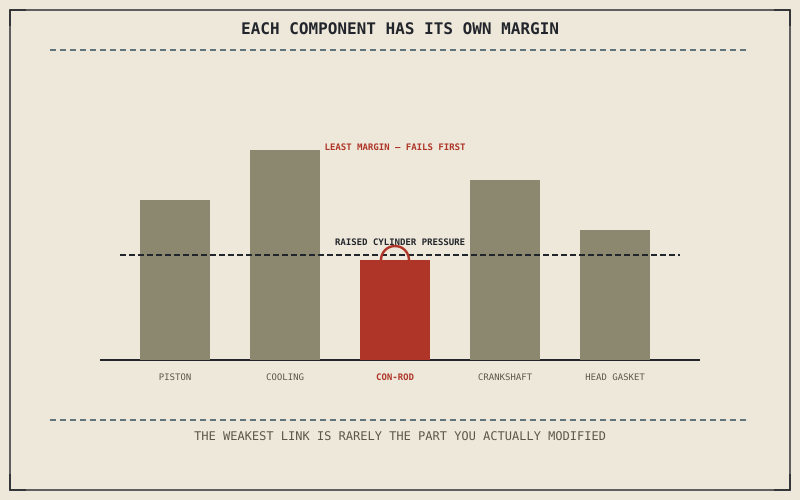

Chapter 13.2 covered an exhaust as a modification that reaches only the edge of the engine. This chapter goes further in — camshafts, compression, and the internal components that actually produce power — where the real cost isn't measured only in money, but in service life and predictability, deliberately traded away for output the engine was never originally engineered to sustain indefinitely.
Chapter 13.4 closed by pointing here: from fit and clearance toward reliability and the engine's actual service life. This chapter covers that trade directly.
Compression and Cams: Trading Longevity for Output
Chapter 2.7 already showed how dramatically a camshaft's lift and duration reshape an engine's entire character, turning a smooth, tractable idle into a lumpy one that only comes alive well past half throttle. A more aggressive cam, or an increase in compression ratio, raises peak cylinder pressures and the thermal loads that come with them — pushing the engine's actual operating conditions closer to the limits Chapter 2.15 already named heat as a genuine threat against, and closer to the knock conditions Chapter 2.4 warned distort combustion when they're crossed.
The Weakest Link Doesn't Move Just Because You Want It To
An engine is a chain of components, each engineered with its own margin above the load it's expected to see in normal operation, and raising output doesn't stress every one of those components equally. Chapter 2.5's precisely machined piston-to-cylinder clearances, connecting rods, and crankshaft bearings each have their own individual limit, and increasing cylinder pressure finds whichever one of them actually has the least margin to begin with — a component that may have nothing to do with whichever part a rider actually modified. This is Chapter 10.1's connected-systems argument in its most consequential form: an engine's parts share load in ways that make the weakest link genuinely hard to predict without real testing, not just a spec sheet.
Raising output doesn't stress every engine component equally — it finds whichever part actually has the least margin to spare, and that part is often not the one a rider modified at all, which is exactly why engine modifications carry a real cost in reliability that a horsepower number alone never shows.

A diagram of an engine's internal components — pistons, rods, crankshaft, cooling system — each shown with a different individual safety margin, with increased cylinder pressure from a modification finding whichever component has the least margin to spare.
A Common Misconception, Cleared Up Early
It's a common assumption that a modification advertised with a specific power figure — "twenty more horsepower" — is a straightforward win with no real downside beyond its price tag. The actual cost is a shortened and less predictable service life, absorbed by whichever component turns out to have the least margin, and that cost doesn't show up on the same spec sheet the power figure does. Chapter 13.1's honest framing applies directly here: an engine modification chasing a genuinely needed performance gap is a different decision from one chasing a number for its own sake, and only the rider actually knows which one they're making.
Where This Leads
Chapter 13.6 turns to cosmetic and bodywork changes next, a category where the stakes shift from reliability back toward appearance alone.
Key Concepts to Remember
- A more aggressive cam or higher compression raises peak cylinder pressure and thermal load beyond what the engine's original margins were built around.
- Increased output finds whichever internal component has the least remaining margin, which is often unrelated to the specific part actually modified.
- A modification's real cost is a shortened, less predictable service life, not just its purchase price or the power number it's marketed with.
Cross-References
| ← Ch. 2.7 | Established how camshaft lift and duration reshape an engine's character; this chapter treats a more aggressive cam as raising cylinder pressure and thermal load as a result. |
| ← Ch. 2.5 | Established the piston, con-rod, and crankshaft's precise machined clearances; this chapter treats those individual margins as what actually limits a modified engine's reliability. |
| ← Ch. 10.1 | Established components as rarely independent of one another; this chapter applies that same principle to why a modification's weakest link is hard to predict in advance. |
| → Ch. 13.6 | Covers cosmetic and bodywork changes. |